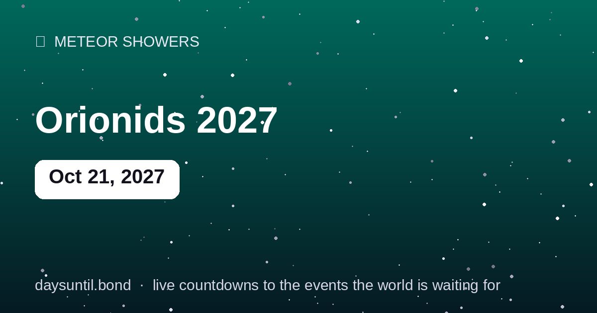

How Many Days Until Orionids 2027?
Orionids 2027 falls on Thursday, October 21, 2027.
The live counter above updates every second in your local time zone. The date and weekday are shown in the event details.

Quick facts
| Peak night | October 21–22, 2027 |
|---|---|
| Best viewing | After midnight to pre-dawn |
| Equipment | None — naked eye only |
About Orionids 2027
The Orionids meteor shower peaks on the night of October 21, 2027 (October 21/22). Halley's Comet's second annual gift: fast meteors radiating from Orion's club in the pre-dawn hours of late October.
Best practice for any meteor shower: dark sky, no telescope, eyes adjusted for 30 minutes, look halfway up toward the radiant's constellation. The counter above runs to the peak night; meteors are visible several nights either side.
Orionids 2027 peak date
The Orionid meteor shower is expected to peak around October 21–22, 2027. The shower is active over a wider period in October, so a clear night near the predicted maximum can still be worthwhile if clouds interrupt the central peak.
The Orionids are generally a moderate shower, with a typical ideal rate around 20 meteors per hour. The actual number seen can be much lower. Use the event countdown for the date and check a current forecast for the peak hour and Moon conditions as October approaches.
A meteor shower from Halley's Comet
The Orionids are one of two annual meteor showers associated with Halley's Comet; the Eta Aquariids in May are the other. Earth passes through dust left along the comet's orbit, and the particles burn up in the upper atmosphere. The meteors appear to radiate from the constellation Orion, giving the shower its name.
Orionid meteors are notably fast. Some leave persistent trains that remain visible briefly after the bright streak has disappeared. The radiant is near Orion's club, but meteors can appear across a large part of the sky, so a wide field of view is more useful than binoculars or a telescope.
When and where to look
The radiant rises later in the evening and climbs toward the early morning sky. Observing after midnight is often productive, especially when Orion is well above the horizon. Find a dark site, turn away from direct lights and give your eyes time to adapt.
A reclining chair makes a long session more comfortable. Dress for autumn temperatures, check cloud cover and avoid looking at bright screens. If the sky is partly cloudy, keep watching through clear gaps rather than assuming the entire night is lost.
What changes the Orionid display
The hourly rate is affected by the Moon, weather, light pollution and the radiant's altitude. A bright Moon can hide the fainter meteors, while a dark rural sky reveals more of the shower's activity. The exact peak can also vary, so a year-specific forecast is more useful than relying only on the recurring calendar date.
The quoted zenithal hourly rate describes ideal conditions and should not be confused with a guaranteed count. A casual observer may see only a fraction of that number, particularly from a suburban location.
Orionids in the annual observing calendar
The Orionids arrive in October between the Perseids of August and the Leonids of November. The Geminids follow in December and are often one of the strongest annual showers. Each has a different radiant and parent body, making the year-round calendar useful for planning.
For a complete view, compare the Orionids with the site's meteor shower schedule and check the latest observing forecast before travelling to a dark-sky location.
Your Orionids 2027 countdown milestones
It is easier to plan against fixed points than against a number that moves. These are the dates on which the countdown to Orionids 2027 passes each marker between now and the day itself — the last one falls on Wednesday 20 October, when there will be 1 day left.
| Milestone | Day | Date | Remaining |
|---|---|---|---|
| 200 days | Sunday | 04 April 2027 | 200 days to go |
| 100 days | Tuesday | 13 July 2027 | 100 days to go |
| 50 days | Wednesday | 01 September 2027 | 50 days to go |
| 30 days | Tuesday | 21 September 2027 | 30 days to go |
| 14 days | Thursday | 07 October 2027 | 14 days to go |
| 7 days | Thursday | 14 October 2027 | 7 days to go |
| 3 days | Monday | 18 October 2027 | 3 days to go |
| 1 days | Wednesday | 20 October 2027 | 1 day to go |
How the remaining time breaks down
328 days is the headline, but it is rarely the number that helps. 234 of those are weekdays and 94 fall on a weekend, which is the split that matters if you are planning around work. It is 46 weeks and 6 days, or roughly 10.8 months, or about 7,872 hours.
| Unit | Until Orionids 2027 |
|---|---|
| Days | 328 |
| Weeks | 46 weeks and 6 days |
| Months (approx) | 10.8 |
| Weekdays | 234 |
| Weekend days | 94 |
| Hours | 7,872 |
| Sleeps | 328 |
Working days are Monday to Friday and do not subtract public holidays, which vary by country and employer — the full month-by-month split is on our weekday page for Orionids 2027.